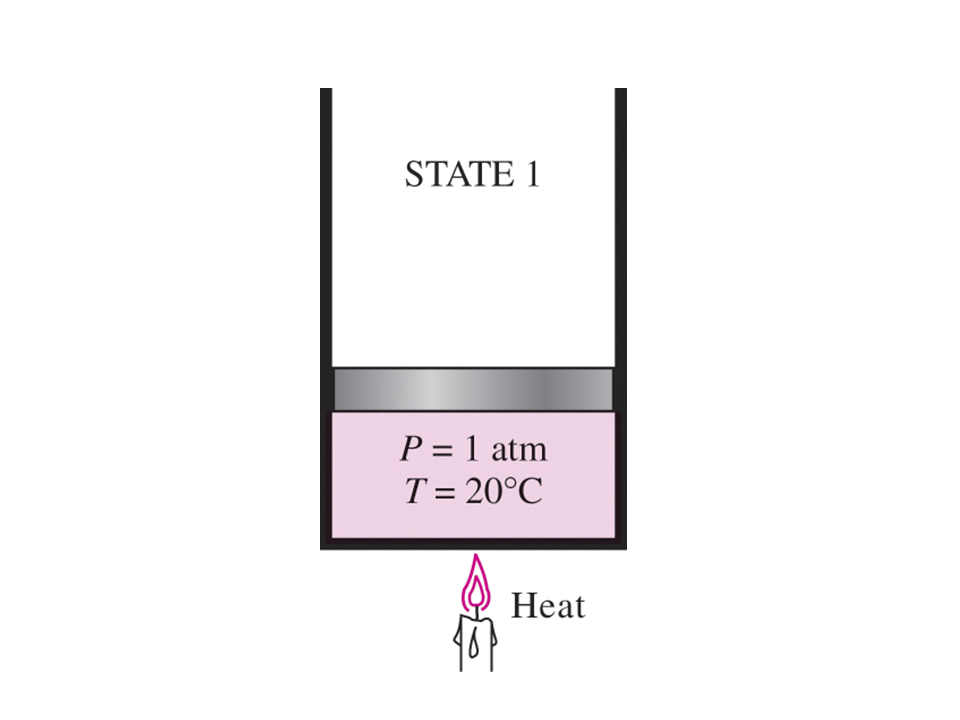
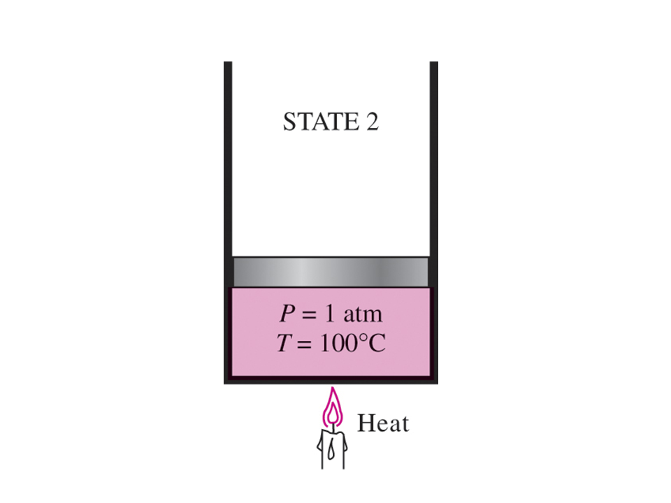
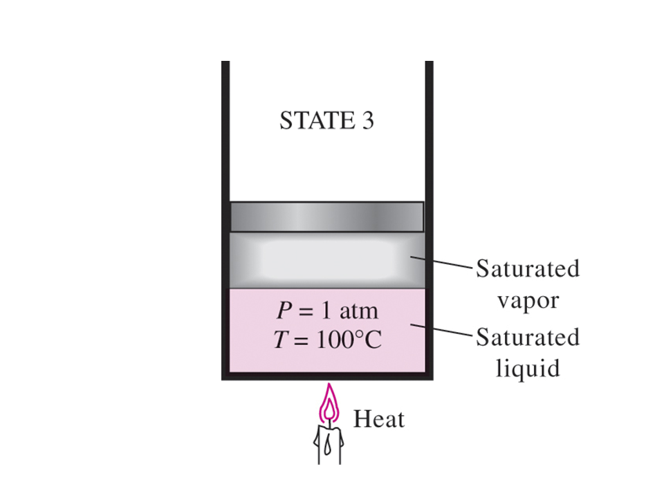
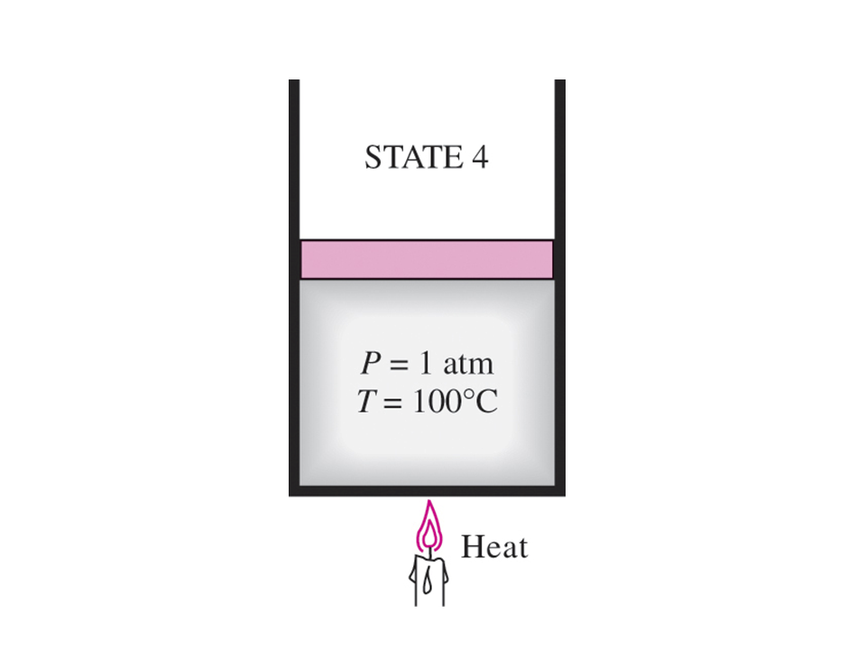
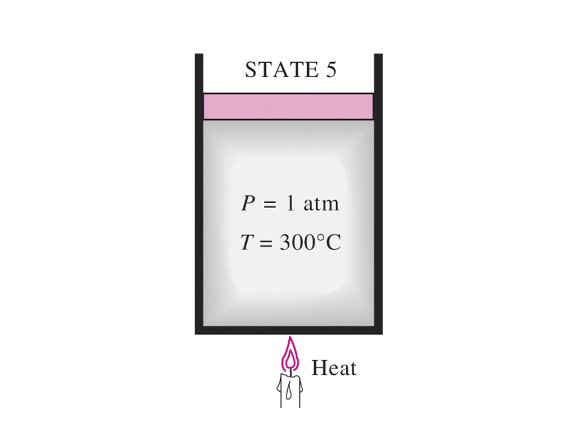
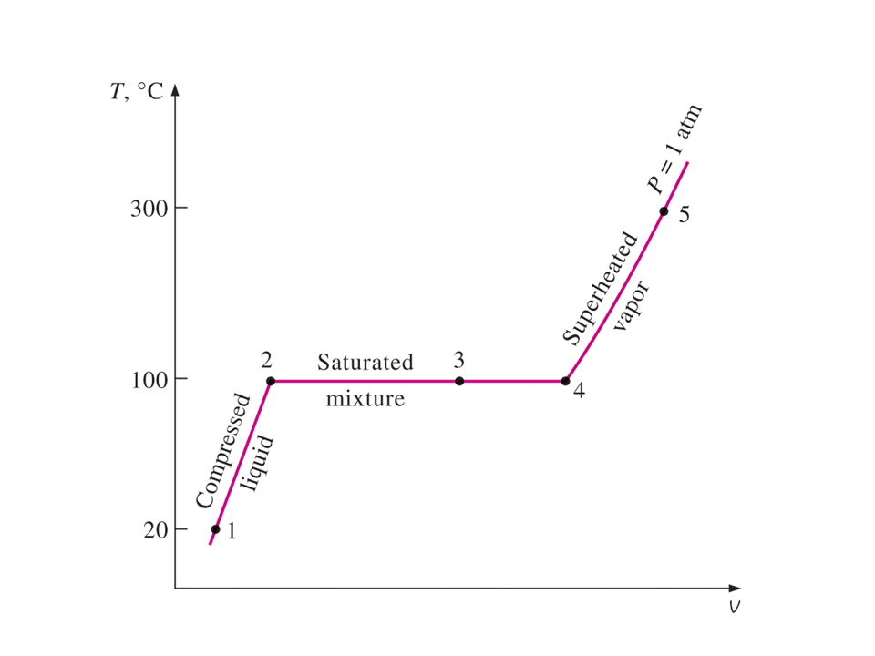

Revisa la Bibliografía recomendada en la sección Fuentes de Información del curso.
Notas para la clase, segunda parte
Consideremos los resultados de calentar agua líquida desde $20^\circ\text{C}$, $1 \text{ atm}$ manteniendo la presión constante. Seguiremos el proceso de presión constante. En primer lugar, el agua líquida está contenida en un dispositivo de pistón-cilindro donde se coloca un peso fijo sobre el pistón para mantener constante la presión del agua en todo momento. A medida que el agua líquida se calienta mientras la presión se mantiene constante, ocurren los siguientes eventos.
Proceso 1-2:
La temperatura y el volumen específico aumentarán desde el estado $1$ de líquido comprimido o líquido subenfriado hasta el estado $2$ de líquido saturado. En la región de líquido comprimido, las propiedades del líquido son aproximadamente iguales a las propiedades del estado líquido saturado a esa temperatura.

Proceso 2-3:
En el estado $2$, el líquido ha alcanzado la temperatura a la que comienza a hervir, llamada temperatura de saturación, y se dice que existe como líquido saturado. Las propiedades en el estado líquido saturado se indican mediante el subíndice $f$ y $v_2 = v_f$. Durante el cambio de fase, tanto la temperatura como la presión permanecen constantes (el agua hierve a $100^\circ\text{C}$ cuando la presión es de $1 \text{ atm}$ o $101,325 \text{ kPa}$). En el estado $3$, las fases de líquido y vapor están en equilibrio y cualquier punto en la línea entre los estados $2$ y $3$ tiene la misma temperatura y presión.


Proceso 3-4:
En el estado $4$ existe un vapor saturado y se completa la vaporización. El subíndice $g$ siempre indicará un estado de vapor saturado. Nótese que $v_4 = v_g$.

Las propiedades termodinámicas en estado líquido saturado y estado de vapor saturado se dan en la Tabla A-4 como tabla de temperatura saturada y en la Tabla A-5 como tabla de presión saturada. Estas tablas contienen la misma información. En la Tabla A-4, la temperatura de saturación es la propiedad independiente y en la Tabla A-5, la presión de saturación es la propiedad independiente. La presión de saturación es la presión a la cual ocurrirá el cambio de fase a una temperatura dada. En la región de saturación la temperatura y la presión son propiedades dependientes; si uno es conocido, entonces el otro es automáticamente conocido.
Proceso 4-5:
Si continúa el calentamiento a presión constante, la temperatura comenzará a aumentar por encima de la temperatura de saturación, $100^\circ\text{C}$ en este ejemplo, y el volumen también aumentará. El estado $5$ se llama estado sobrecalentado porque $T_5$ es mayor que la temperatura de saturación para la presión y el vapor no está a punto de condensarse. Las propiedades termodinámicas del agua en la región sobrecalentada se encuentran en las tablas de vapor sobrecalentado, Tabla A-6.

Este proceso de calentamiento a presión constante se ilustra en la siguiente figura.
